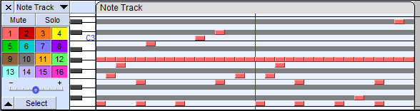

Note Tracks
- Note Tracks can be useful to visually compare a given MIDI (or Allegro) file with a sampled audio file (such as WAV) of the same music.
- They can be cut-and-paste edited.
- They can then be exported using the command. When exporting so as to overwrite an existing GRO, MID or MIDI file, the original file is renamed with ".bak" suffix, for example "keyboards.mid.bak".
Contents
- Sample Note track
- Playing and editing Note tracks
- Track Control Panel
- Vertical Scale
- Note Track Dropdown Menu
- Note Display
- Track Focus
A Note Track
Note tracks can be created by importing MIDI (or Allegro) files with .
Note carefully that when a MIDI or Allegro is imported you are unlikely to see all of the notes that are in the track with the initial view restricted to two octaves centered around the average note value.
Observe carefully the little black marks at the bottom right of the image. These indicate that there are additional notes in the Note Track below them. More notes can me made visible by using Vertical Zooming.
- 
Playing and editing Note tracks
MIDI and Allegro playback
Note tracks containing MIDI data (or Allegro data) can now be played in Audacity. Loop Play and Play Cut Preview also work with Note tracks. But note that there will no use of the Playback meter while Note tracks are played.
Please see these pages in the Audacity Wiki:
Editing Note Tracks
Only limited editing can be performed on Note tracks such as cutting, pasting and deleting.
Track Control Panel
 The Track Control Panel at the left of the note track has controls for this track. Left-clicking other than on a control performs track selection and move as follows.
The Track Control Panel at the left of the note track has controls for this track. Left-clicking other than on a control performs track selection and move as follows.- Clicking selects all this track's audio, deselecting all other tracks.
- Holding Shift while clicking selects all this track's audio, keeping already selected tracks selected.
- (keyboard: use Up or Down to give the track focus, then Enter to select it; hold Shift then use Up or Down to extend selection into another track. Read keyboard selection for more).
- Click-and-drag moves this track up or down when there are other tracks (keyboard: choose one of the "Move Track" commands in Note Track Dropdown Menu, opened by Shift + M on the currently focused track ).
Controls
Close Button:
-
 Clicking this button will close the track, removing it from the project.
Clicking this button will close the track, removing it from the project.
Note Track Dropdown Menu:
 Clicking the track name or using Shift + M on the currently focused track opens the Note Track Dropdown Menu giving options that affect this track only. Newly created tracks are named "Note Track".
Clicking the track name or using Shift + M on the currently focused track opens the Note Track Dropdown Menu giving options that affect this track only. Newly created tracks are named "Note Track".
Mute Button:
 Click to silence this track when playing. By default, the track will only be silenced if no Solo buttons are depressed. Click again to unsilence.
Click to silence this track when playing. By default, the track will only be silenced if no Solo buttons are depressed. Click again to unsilence.
| Tracks on which the Mute button is pressed are never exported. |
Solo Button:
 Click to play just this track. Click again to release the button. Whenever playing audio, Solo takes precedence over Mute by default - the Mute buttons have no effect whilst any Solo button is down. There are two other options for Solo button behavior in the Tracks Preferences. One of these is to remove the Solo button, leaving only a Mute button.
Click to play just this track. Click again to release the button. Whenever playing audio, Solo takes precedence over Mute by default - the Mute buttons have no effect whilst any Solo button is down. There are two other options for Solo button behavior in the Tracks Preferences. One of these is to remove the Solo button, leaving only a Mute button.
Channel toggles:
 Shows enabled channels, color coded to match the actual notes in the channels. Individual channels may be toggled by left-clicking, or all other channels can be muted/unmuted by right-clicking. Channel numbers start at 1; channel 10 reserved for percussion by the General MIDI specification.
Shows enabled channels, color coded to match the actual notes in the channels. Individual channels may be toggled by left-clicking, or all other channels can be muted/unmuted by right-clicking. Channel numbers start at 1; channel 10 reserved for percussion by the General MIDI specification.
Velocity Slider:
 Set the velocity offset for this track. Hold down the shift key while dragging to adjust the slider in finer increments. Double-click the slider to bring up a window where you can make precise adjustments or enter a velocity value.
Set the velocity offset for this track. Hold down the shift key while dragging to adjust the slider in finer increments. Double-click the slider to bring up a window where you can make precise adjustments or enter a velocity value.- Velocity is in units of MIDI velocity, ranging from 1 (lowest) to 127 (highest). The offset from this slider (ranging from -50 to +50) is combined with each note's individual velocity to produce the resultant velocity.
Track Collapse Button:
 Click on this to make the track 'fold up' into a smaller size. Click again, or drag the lower edge of the track to restore the size.
Click on this to make the track 'fold up' into a smaller size. Click again, or drag the lower edge of the track to restore the size.
Status Indicators
- Sync-Lock Indicator:
 When present (at bottom-right of the Track Control Panel, adjacent to the Track Collapse button), indicates that this track is part of a Sync-Locked Track Group.
When present (at bottom-right of the Track Control Panel, adjacent to the Track Collapse button), indicates that this track is part of a Sync-Locked Track Group.
Vertical Scale

- The vertical scale displays note pitches like a piano's keys, ranging from the lowest to the highest possible MIDI notes (C -1 to G 9). Each octave is labeled at C (and the notes above are in that octave).
- The Vertical Scale can be used to control Vertical Zooming.
Note Track Dropdown Menu
Clicking the note track's name by the downward-pointing triangle (or using shortcut Shift + M or the keyboard Menu key when the note track has focus) opens the Note Track Dropdown Menu:

- Name
- Displays the "Track Name" dialog where you can give the track a new name. Useful in multi-track projects to provide a visual indication of the content of each track.
- Up Octave and Down Octave
- Moves the vertical scale up or down one octave.
Moving Tracks
Tracks can be moved up and down using the menu items.
- Move Track Up: Moves track up.
- Move Track Down: Moves track down.
- Move Track to Top: Moves track to become the topmost track in the project.
- Move Track to Bottom: Moves track to become the bottom track in the project.
Note tracks can also be moved up or down by clicking between the controls in the track's Track Control Panel then dragging upwards or downwards.
Note display
The notes from the MIDI sequence are displayed within the track.
Colors indicate the MIDI channels that the given note is in, and match those seen in the channel toggles. Each channel has an instrument assigned to it (not currently shown), although channels can change instruments partway through. Channel 10 (gray) is reserved by most MIDI devices for percussion. Some allegro files and MIDI files have more than 16 channels, in that case they will be displayed as a different gray.
Notes that are above or below the visible area will be drawn in black in the top or bottom rows (no matter how far above or below they are), to indicate that there is something to be scrolled to.
Blue vertical lines indicate measures. Note that some MIDI files do not have accurate tempo information, in which case the lines may not match actual measures in the song.
Track focus
You may have noticed in the images on this page that the tracks have a yellow border around them. This border indicates that this track has focus.
The track that has focus is the track that accepts any command whose name includes "focused track". These commands include commands such as "Close focused track" (Shift + C), "Mute/Unmute focused track" (Shift + U) and "Toggle focused track" (RETURN or Enter, which toggles whether the focused track is selected or not).
The complete list of "focused track" commands can be seen by searching for "focused track" (without quotes) in Keyboard Preferences or by viewing the description of these commands in Keyboard Shortcut Reference.